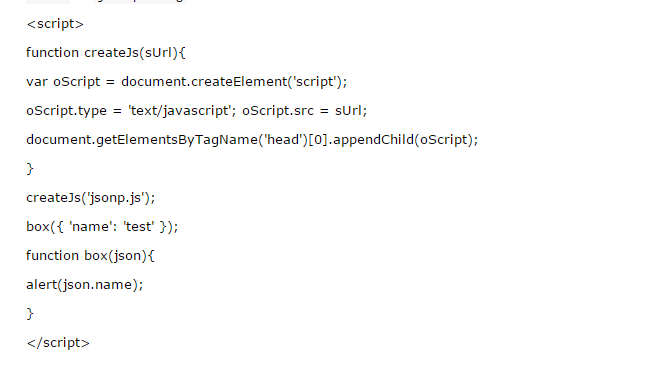

Doctype? 严格模式与混杂模式-如何触发这两种模式，区分它们有何意义?
用于声明文档使用那种规范（html/Xhtml）一般为 严格 过度 基于框架的html文档
加入XMl声明可触发，解析方式更改为IE5.5 拥有IE5.5的bug
CSS引入的方式有哪些? link和@import的区别是?
内联 内嵌 外链 导入
区别 ：同时加载
前者无兼容性，后者CSS2.1以下浏览器不支持
Link 支持使用javascript改变样式，后者不可
你做的页面在哪些流览器测试过?这些浏览器的内核分别是什么?
Ie(Ie内核) 火狐（Gecko） 谷歌（webkit） opear(Presto)
写出几种IE6 BUG的解决方法
1.双边距BUG float引起的 使用display
2.3像素问题 使用float引起的 使用dislpay:inline -3px
3.超链接hover 点击后失效 使用正确的书写顺序 link visited hover active
4.Ie z-index问题 给父级添加position:relative
5.Png 透明 使用js代码 改
6.Min-height 最小高度 ！Important 解决’
7.select 在ie6下遮盖 使用iframe嵌套
8.为什么没有办法定义1px左右的宽度容器（IE6默认的行高造成的，使用over:hidden,zoom:0.08 line-height:1px）
position的值， relative和absolute分别是相对于谁进行定位的？
absolute :生成绝对定位的元素， 相对于最近一级的 定位不是 static 的父元素来进行定位。
fixed （老IE不支持）生成绝对定位的元素，通常相对于浏览器窗口或 frame 进行定位。
relative 生成相对定位的元素，相对于其在普通流中的位置进行定位。
static 默认值。没有定位，元素出现在正常的流中
sticky 生成粘性定位的元素，容器的位置根据正常文档流计算得出
display:none 和 visibility:hidden 的区别？
display:none 隐藏对应的元素，在文档布局中不再给它分配空间，它各边的元素会合拢，就当他从来不存在。
visibility:hidden 隐藏对应的元素，但是在文档布局中仍保留原来的空间。
this对象的理解
this总是指向函数的直接调用者（而非间接调用者）；
如果有new关键字，this指向new出来的那个对象；
在事件中，this指向触发这个事件的对象，特殊的是，IE中的attachEvent中的this总是指向全局对象Window；
eval是做什么的？
它的功能是把对应的字符串解析成JS代码并运行；
应该避免使用eval，不安全，非常耗性能（2次，一次解析成js语句，一次执行）。
由JSON字符串转换为JSON对象的时候可以用eval，var obj =eval('('+ str +')');
null和undefined的区别？
null是一个表示"无"的对象，转为数值时为0；undefined是一个表示"无"的原始值，转为数值时为NaN。
undefined：
（1）变量被声明了，但没有赋值时，就等于undefined。
（2) 调用函数时，应该提供的参数没有提供，该参数等于undefined。
（3）对象没有赋值的属性，该属性的值为undefined。
（4）函数没有返回值时，默认返回undefined。
null：
（1） 作为函数的参数，表示该函数的参数不是对象。
（2） 作为对象原型链的终点。
new操作符具体干了什么呢?
（1）创建一个空对象，并且 this 变量引用该对象，同时还继承了该函数的原型。
（2）属性和方法被加入到 this 引用的对象中。
（3）新创建的对象由 this 所引用，并且最后隐式的返回 this 。
JSON 的了解？
JSON(JavaScript Object Notation) 是一种轻量级的数据交换格式。它是基于JavaScript的一个子集。数据格式简单, 易于读写, 占用带宽小。
格式：采用键值对，例如：{'age':'12', 'name':'back'}
call() 和 apply() 的区别和作用？
apply()函数有两个参数：第一个参数是上下文，第二个参数是参数组成的数组。如果上下文是null，则使用全局对象代替。
如：function.apply(this,[1,2,3]);
call()的第一个参数是上下文，后续是实例传入的参数序列。
如：function.call(this,1,2,3);
JSONP：
原理是：动态插入 script 标签，通过 script 标签引入一个 js 文件，这个js文件载入成功后会执行我们在url参数中指定的函数， 并且会把我们需要的 json 数据作为参数传入。
由于同源策略的限制， XmlHttpRequest 只允许请求当前源（域名、协议、端口）的资源，为了实现跨域请求，可以通过 script 标签实现跨域请求，然后在服务端输出JSON数据并执行回调函数，从而解决了跨域的数据请求。
优点是兼容性好，简单易用，支持浏览器与服务器双向通信。缺点是只支持GET请求。
JSONP ： json+padding （内填充），顾名思义，就是把JSON填充到一个盒子里

CORS
服务器端对于 CORS 的支持，主要就是通过设置 Access-Control-Allow-Origin 来进行的。如果浏览器检测到相应的设置， 就可以允许 Ajax 进行跨域的访问。
通过修改document.domain来跨子域
将子域和主域的 document.domain 设为同一个主域.前提条件：这两个域名必须属于同一个基础域名! 而且所用的协议，端口都要一致，否则无法利用 document.domain 进行跨域
主域相同的使用 document.domain
使用window.name来进行跨域
window 对象有个 name 属性，该属性有个特征：即在一个窗口(window)的生命周期内,窗口载入的所有的页面都是共享一 个 window.name 的，每个页面对 window.name 都有读写的权限， window.name 是持久存在一个窗口载入过的所有页面中的
使用HTML5中新引进的 window.postMessage 方法来跨域传送数据
还有flash、在服务器上设置代理页面等跨域方式。个人认为 window.name 的方法既不复杂，也能兼容到几乎所有浏览器， 这真是极好的一种跨域方法。
XML 和 JSON 的区别？
(1).数据体积方面。 JSON相对于XML来讲，数据的体积小，传递的速度更快些。
(2).数据交互方面。 JSON与JavaScript的交互更加方便，更容易解析处理，更好的数据交互。
(3).数据描述方面。 JSON对数据的描述性比XML较差。
(4).传输速度方面。 JSON的速度要远远快于XML。
创建ajax过程
(1)创建XMLHttpRequest对象,也就是创建一个异步调用对象.
(2)创建一个新的HTTP请求,并指定该HTTP请求的方法、URL及验证信息.
(3)设置响应HTTP请求状态变化的函数.
(4)发送HTTP请求.
(5)获取异步调用返回的数据.
(6)使用JavaScript和DOM实现局部刷新.
标记清除（mark and sweep）
这是JavaScript最常见的垃圾回收方式，当变量进入执行环境的时候，比如函数中声明一个变量，垃圾回收器将其标记 为“进入环境”，当变量离开环境的时候（函数执行结束）将其标记为“离开环境”。
垃圾回收器会在运行的时候给存储在内存中的所有变量加上标记，然后去掉环境中的变量以及被环境中变量所引用 的变量（闭包），在这些完成之后仍存在标记的就是要删除的变量了
引用计数(reference counting)
在低版本IE中经常会出现内存泄露，很多时候就是因为其采用引用计数方式进行垃圾回收。引用计数的策略是跟踪记录 每个值被使用的次数，当声明了一个 变量并将一个引用类型赋值给该变量的时候这个值的引用次数就加1，如果该变 量的值变成了另外一个，则这个值得引用次数减1，当这个值的引用次数变为0的时 候，说明没有变量在使用，这个值 没法被访问了，因此可以将其占用的空间回收，这样垃圾回收器会在运行的时候清理掉引用次数为0的值占用的空间。
在IE中虽然 JavaScript 对象通过标记清除的方式进行垃圾回收，但BOM与DOM对象却是通过引用计数回收垃圾的， 也就是说 只要涉及 BOM 及DOM就会出现循环引用问题。
原型链继承的缺点
一是字面量重写原型会中断关系，使用引用类型的原型，并且子类型还无法给超类型传递参数。
借用构造函数（类式继承）
借用构造函数虽然解决了刚才两种问题，但没有原型，则复用无从谈起。所以我们需要原型链+借用构造函数的模式， 这种模式称为组合继承
组合式继承
组合式继承是比较常用的一种继承方法，其背后的思路是 使用原型链实现对原型属性和方法的继承， 而通过借用构造函数来实现对实例属性的继承。这样，既通过在原型上定义方法实现了函数复用，又保证每个实例都有它自己的属性。
defer和async、动态创建DOM方式（创建script，插入到DOM中，加载完毕后callBack）、按需异步载入js
Javascript数据推送
Commet ：基于HTTP长连接的服务器推送技术
基于 WebSocket 的推送方案
SSE （Server-Send Event）：服务器推送数据新方式
对前端界面工程师这个职位是怎么样理解的？它的前景会怎么样？
前端是最贴近用户的程序员，比后端、数据库、产品经理、运营、安全都近。
1、实现界面交互
2、提升用户体验
3、有了Node.js，前端可以实现服务端的一些事情
前端是最贴近用户的程序员，前端的能力就是能让产品从 90分进化到 100 分，甚至更好，
参与项目，快速高质量完成实现效果图，精确到1px；
与团队成员，UI设计，产品经理的沟通；
做好的页面结构，页面重构和用户体验；
处理hack，兼容、写出优美的代码格式；
针对服务器的优化、拥抱最新前端技术。
你如何对网站的文件和资源进行优化?期待的解决方案包括：
文件合并
文件最小化/文件压缩
使用CDN托管
缓存的使用
HTTP状态码知道哪些？
100 Continue 继续，一般在发送post请求时，已发送了http header之后服务端将返回此信息，表示确认，之后发送具体参数信息
200 OK 正常返回信息
201 Created 请求成功并且服务器创建了新的资源
202 Accepted 服务器已接受请求，但尚未处理
301 Moved Permanently 请求的网页已永久移动到新位置。
302 Found 临时性重定向。
303 See Other 临时性重定向，且总是使用 GET 请求新的 URI。
304 Not Modified 自从上次请求后，请求的网页未修改过。
400 Bad Request 服务器无法理解请求的格式，客户端不应当尝试再次使用相同的内容发起请求。
401 Unauthorized 请求未授权。
403 Forbidden 禁止访问。
404 Not Found 找不到如何与 URI 相匹配的资源。
500 Internal Server Error 最常见的服务器端错误。
503 Service Unavailable 服务器端暂时无法处理请求（可能是过载或维护）。
你有哪些性能优化的方法？
（1） 减少http请求次数：CSS Sprites, JS、CSS源码压缩、图片大小控制合适；网页Gzip，CDN托管，data缓存 ，图片服务器。
（2） 前端模板 JS+数据，减少由于HTML标签导致的带宽浪费，前端用变量保存AJAX请求结果，每次操作本地变量，不用请求，减少请求次数
（3） 用innerHTML代替DOM操作，减少DOM操作次数，优化javascript性能。
（4） 当需要设置的样式很多时设置className而不是直接操作style。
（5） 少用全局变量、缓存DOM节点查找的结果。减少IO读取操作。
（6） 避免使用CSS Expression（css表达式)又称Dynamic properties(动态属性)。
（7） 图片预加载，将样式表放在顶部，将脚本放在底部 加上时间戳。
什么叫优雅降级和渐进增强？
优雅降级：Web站点在所有新式浏览器中都能正常工作，如果用户使用的是老式浏览器，则代码会检查以确认它们是否能 正常工作。由于IE独特的盒模型布局问题，针对不同版本的IE的hack实践过优雅降级了,为那些无法支持功能的浏览器增 加候选方案，使之在旧式浏览器上以某种形式降级体验却不至于完全失效.
渐进增强：从被所有浏览器支持的基本功能开始，逐步地添加那些只有新式浏览器才支持的功能,向页面增加无害于基础浏 览器的额外样式和功能的。当浏览器支持时，它们会自动地呈现出来并发挥作用。
哪些常见操作会造成内存泄漏？
内存泄漏指任何对象在您不再拥有或需要它之后仍然存在。
垃圾回收器定期扫描对象，并计算引用了每个对象的其他对象的数量。如果一个对象的引用数量为 0（没有其他对象引用过该对 象），或对该对象的惟一引用是循环的，那么该对象的内存即可回收。
setTimeout 的第一个参数使用字符串而非函数的话，会引发内存泄漏。
闭包、控制台日志、循环（在两个对象彼此引用且彼此保留时，就会产生一个循环）
线程与进程的区别
一个程序至少有一个进程,一个进程至少有一个线程.
线程的划分尺度小于进程，使得多线程程序的并发性高。
另外，进程在执行过程中拥有独立的内存单元，而多个线程共享内存，从而极大地提高了程序的运行效率。
线程在执行过程中与进程还是有区别的。每个独立的线程有一个程序运行的入口、顺序执行序列和程序的出口。但是线程不能 够独立执行，必须依存在应用程序中，由应用程序提供多个线程执行控制。
从逻辑角度来看，多线程的意义在于一个应用程序中，有多个执行部分可以同时执行。但操作系统并没有将多个线程看做多个 独立的应用，来实现进程的调度和管理以及资源分配。这就是进程和线程的重要区别。
WebPack 是一个模块打包工具，你可以使用 WebPack 管理你的模块依赖，并编绎输出模块们所需的静态文件。它能够很好地管理、 打包Web开发中所用到的 HTML、JavaScript、CSS 以及各种静态文件（图片、字体等），让开发过程更加高效。对于不同类型的资源， webpack 有对应的模块加载器。 webpack 模块打包器会分析模块间的依赖关系，最后 生成了优化且合并后的静态资源。
webpack 的两大特色：
1.code splitting（可以自动完成）
2.loader 可以处理各种类型的静态文件，并且支持串联操作
webpack 是以 commonJS 的形式来书写脚本滴，但对 AMD/CMD 的支持也很全面，方便旧项目进行代码迁移。
webpack 具有 requireJs 和 browserify 的功能，但仍有很多自己的新特性：
为了准确无误地把数据送达目标处， TCP 协议采用了三次握手策略。用TCP协议把数据包送出去后， TCP 不会对传送 后的 情况置之不理，它一定会向对方确认是否成功送达。握手过程中使用了TCP的标志： SYN 和 ACK 。
发送端首先发送一个带 SYN 标志的数据包给对方。接收端收到后，回传一个带有 SYN/ACK 标志的数据包以示传达确认信息。 最后，发送端再回传一个带 ACK 标志的数据包，代表“握手”结束。 若在握手过程中某个阶段莫名中断， TCP 协议会再次 以相同的顺序发送相同的数据包。
断开一个TCP连接则需要“四次握手”：
TCP （Transmission Control Protocol，传输控制协议）是基于连接的协议，也就是说，在正式收发数据前，必须和对方建立可靠 的连接。一个 TCP 连接必须要经过三次“对话”才能建立起来
UDP （User Data Protocol，用户数据报协议）是与TCP相对应的协议。它是面向非连接的协议，它不与对方建立连接，而是直接就 把数据包发送过去！ UDP适用于一次只传送少量数据、对可靠性要求不高的应用环境。
作用域链的作用是保证执行环境里有权访问的变量和函数是有序的，作用域链的变量只能向上访问，变量访问到 window 对象即被终 止，作用域链向下访问变量是不被允许的。
sql注入原理
就是通过把SQL命令插入到Web表单递交或输入域名或页面请求的查询字符串，最终达到欺骗服务器执行恶意的SQL命令。
XSS原理及防范
Xss(cross-site scripting)攻击指的是攻击者往Web页面里插入恶意 html 标签或者javascript 代码。比如：攻击者在论坛中放一个 看似安全的链接，骗取用户点击后，窃取 cookie 中的用户私密信息；或者攻击者在论坛中加一个恶意表单， 当用户提交表单的时候，却把信息传送到攻击者的服务器中，而不是用户原本以为的信任站点。
XSS防范方法
首先代码里对用户输入的地方和变量都需要仔细检查长度和对 ”<”,”>”,”;”,”’”等字符做过滤；其次任何内容写到页面之前都 必须加以 encode ，避免不小心把 html tag 弄出来。这一个层面做好，至少可以堵住超过一半的 XSS 攻击。
首先，避免直接在 cookie 中泄露用户隐私，例如email、密码等等。
其次，通过使 cookie 和系统 ip 绑定来降低 cookie 泄露后的危险。这样攻击者得到的 cookie 没有实际价值，不可能拿来重放。
如果网站不需要再浏览器端对 cookie 进行操作，可以在 Set-Cookie 末尾加上HttpOnly 来防止 javascript 代码直接获取 cookie 。
尽量采用 POST 而非 GET 提交表单
XSS与CSRF有什么区别吗？
XSS 是获取信息，不需要提前知道其他用户页面的代码和数据包。 CSRF 是代替用户完成指定的动作，需要知道其他用户页面的代码和 数据包。
要完成一次 CSRF 攻击，受害者必须依次完成两个步骤：
登录受信任网站A，并在本地生成Cookie。
在不登出A的情况下，访问危险网站B。
CSRF的防御
服务端的 CSRF 方式方法很多样，但总的思想都是一致的，就是在客户端页面增加伪随机数。
通过验证码的方法
WebSocket 是 Web 应用程序的传输协议，它提供了双向的，按序到达的数据流。他是一个 Html5 协议， WebSocket 的连接是持久的，他通过在客户端和服务器之间保持双工连接，服务器的更新可以被及时推送 给客户端，而不需要客户端以一定时间间隔去轮询。
HTTP 协议通常承载于TCP协议之上，在 HTTP 和 TCP 之间添加一个安全协议层（ SSL 或 TSL ），这个时候，就成了我们常说的HTTPS。
默认HTTP的端口号为80， HTTPS 的端口号为443。
为什么 HTTPS 安全
因为网络请求需要中间有很多的服务器路由器的转发。中间的节点都可能篡改信息，而如果使用 HTTPS ，密钥在你和终点站才有。 https 之所以比 http 安全，是因为他利用 ssl/tls 协议传输。它包含证书，卸载，流量转发，负载均衡，页面适配，浏览器适配， refer传递等。保障了传输过程的安全性
AMD 是 RequireJS 在推广过程中对模块定义的规范化产出。
CMD 是 SeaJS 在推广过程中对模块定义的规范化产出。
AMD 是提前执行， CMD 是延迟执行。
AMD 推荐的风格通过返回一个对象做为模块对象， CommonJS 的风格通过对 module.exports 或 exports 的属性赋值来达到暴露模
块对象的目的。
CMD模块方式
define(function(require, exports, module) {
// 模块代码
});
为简化用户使用提供技术支持（交互部分）
为多个浏览器兼容性提供支持
为提高用户浏览速度（浏览器性能）提供支持
为跨平台或者其他基于webkit或其他渲染引擎的应用提供支持
为展示数据提供支持（数据接口）
代码层面：避免使用css表达式，避免使用高级选择器，通配选择器。
缓存利用：缓存Ajax，使用CDN，使用外部js和css文件以便缓存，添加Expires头，服务端配置Etag，减少DNS查找等
请求数量：合并样式和脚本，使用css图片精灵，初始首屏之外的图片资源按需加载，静态资源延迟加载。
请求带宽：压缩文件，开启GZIP，